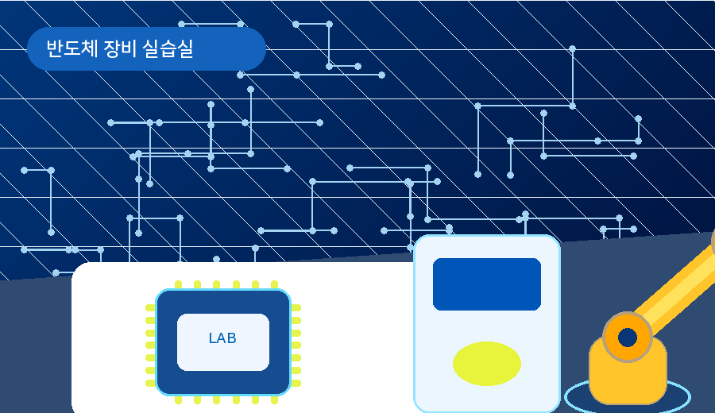
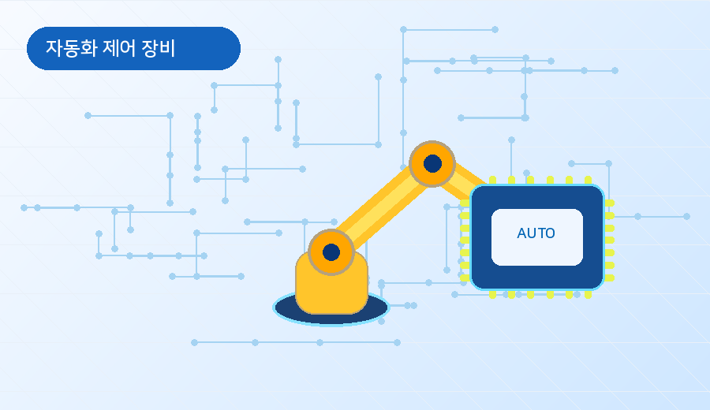

반도체 장비 실습 이미지
장비와 로봇 이미지를 활용해 실습 중심 교육이라는 점을 강조합니다.
실습 중심 사이트임을 보여주기 위해 장비, 로봇, 회로 이미지를 활용합니다.
글만 많은 화면보다 이미지와 설명을 함께 제공하면 사용자가 교육 내용을 빠르게 이해할 수 있습니다.

장비와 로봇 이미지를 활용해 실습 중심 교육이라는 점을 강조합니다.

제어, 센서, 공압 실습과 연결되는 이미지를 배치합니다.

학교 마크를 헤더와 푸터에 배치해 공식성을 높입니다.
장비명을 카드로 구분하면 필요한 장비 정보를 빠르게 찾을 수 있습니다.
 PLC
PLC래더 회로, 입출력 제어, 타이머와 카운터 실습에 활용합니다.
Sensor센서 입력과 공압 액추에이터의 동작 원리를 학습합니다.
 CAD
CADSolidWorks 모델링, 도면 작성, 기구 설계 기초를 익힙니다.
장비 제어와 로봇 자동화 흐름을 시각적으로 이해합니다.
장비 이용 시간, 안전수칙, 실습실 위치를 별도 페이지에서 안내하면 문의가 줄어듭니다.